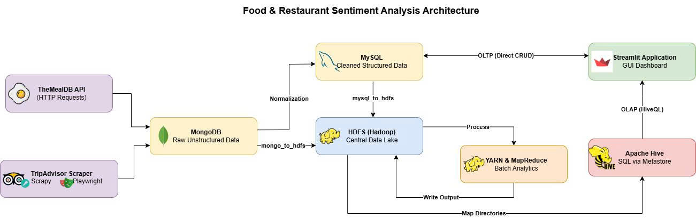

| Họ và Tên | Vai trò (Role) | Trách nhiệm chính |
|---|---|---|
| Lê Phạm Thùy Duyên (22110122) | Data Engineer & DB | Viết crawler TripAdvisor & gọi API TheMealDB; thiết lập pipeline dữ liệu MongoDB, MySQL, HDFS. |
| Trần Đại Sơn (22146393) | Hadoop Infrastructure | Cấu hình cài đặt toàn bộ hạ tầng dự án; viết script backup/restore dữ liệu tự động. |
| Vũ Kiều Thuý Vân (22110266) | MapReduce Developer | Xây dựng và thực thi 8 chương trình MapReduce bằng Python (mrjob); phân tích dữ liệu dùng Apache Hive. |
| Đinh Trọng Đức Anh (22110096) | UI Developer | Phát triển Dashboard Streamlit (CRUD, charts); soạn Slides, báo cáo và làm video demo thuyết trình. |
Thị trường ẩm thực tại Thành phố Hồ Chí Minh vô cùng đa dạng và cạnh tranh. Tuy nhiên, dữ liệu về đánh giá của khách hàng, mức độ phổ biến của các món ăn và chất lượng dịch vụ lại nằm rải rác và không có cấu trúc.
Yêu cầu: Cần một hệ thống thu thập, lưu trữ, và xử lý phân tán lượng lớn dữ liệu đánh giá này để trích xuất các insight có giá trị kinh doanh.

Kiến trúc Pipeline từ Crawler (TripAdvisor, TheMealDB) → Staging DB (MongoDB, MySQL) → ETL Sync → HDFS Storage → Phân tích (Hive, MapReduce) → Dashboard (Streamlit).
Thiết kế hệ thống Scraping thông minh. Nhiệm vụ sống còn là vượt qua các hệ thống Anti-bot (DataDome) cực kỳ phức tạp để lấy được dữ liệu sạch.
Làm sạch hàng vạn bình luận text thô, tách địa chỉ, bóc tách điểm số và làm phẳng các mảng dữ liệu lồng nhau phức tạp.
Chuẩn hóa Schema. Đưa dữ liệu thô vào MongoDB (NoSQL) và phân rã các thực thể thành bảng quan hệ tối ưu trong MySQL để chuẩn bị cho Streamlit Dashboard.
Hệ thống kết hợp dữ liệu từ 2 nền tảng riêng biệt để phục vụ phân tích chéo.
Nền tảng đánh giá du lịch và nhà hàng lớn nhất thế giới.
Cơ sở dữ liệu mở (Open API) về các công thức nấu ăn toàn cầu.
| Trường dữ liệu | Ý nghĩa / Mục đích phân tích |
|---|---|
| URL (ID) | Định danh duy nhất nhà hàng để chống trùng lặp. |
| Name | Tên nhà hàng để hiển thị trên Dashboard. |
| Address / District | Phân tích sự phân bổ nhà hàng theo địa lý (VD: Quận nào có nhiều nhà hàng nhất, điểm trung bình cao nhất). |
| Rating (1-5) | Phân khúc nhà hàng thành các nhóm: 1-2 sao, 3 sao, 4-5 sao. |
| Review Count | Đo lường mức độ phổ biến và độ tin cậy của nhà hàng. |
| Reviews (Array) | Mỗi phần tử chứa [User, Rating, Comment]. Đây là dữ liệu text cốt lõi dùng cho MapReduce Sentiment Analysis (chấm điểm cảm xúc). |
| CSS Selector | Cú pháp ngắn gọn, dễ đọc, tìm theo id (`#`), class (`.`), tag. Dùng tốt cho layout tĩnh. Không thể duyệt ngược lên cha. |
| XPath | Cú pháp phức tạp hơn nhưng sức mạnh tuyệt đối. Tìm theo nội dung text, duyệt ngược cây DOM, tìm phần tử theo cấu trúc logic phức tạp. |
| Trường dữ liệu | Ý nghĩa / Mục đích phân tích |
|---|---|
| ID (meal_id) | Mã định danh duy nhất của công thức. |
| Name | Tên món ăn (VD: Adana kebab, Beef Wellington). |
| Category | Phân loại món ăn (Seafood, Beef, Vegetarian...) phục vụ thống kê tần suất ẩm thực. |
| Area | Khu vực ẩm thực (Italian, Vietnamese, Japanese...). |
| Ingredients (Array) | Mảng chứa danh sách các nguyên liệu làm nên món ăn. Dữ liệu này đóng vai trò từ điển nguyên liệu để tìm kiếm chéo trong bình luận của nhà hàng TripAdvisor (Ingredient Match MapReduce). |
Thay vì gọi từng ID món ăn, hệ thống gọi API endpoint `search.php?f={letter}` duyệt từ A đến Z. Chỉ với 26 requests, thu thập được toàn bộ ~300+ món ăn miễn phí, không bao giờ vi phạm Rate Limit.
API trả về 20 cột riêng biệt: `strIngredient1` đến `strIngredient20`. Điều này cực kỳ khó cho MapReduce.
Dữ liệu thô từ MongoDB (Nested Documents) không phù hợp cho truy vấn Streamlit hay MapReduce phân tích theo chiều dọc. Script `init_db.py` thực hiện phân rã thành các bảng chuẩn:
Trích xuất toàn bộ dữ liệu từ MongoDB & MySQL thành các file phân tán JSONL, tự động upload lên Hệ thống lưu trữ Hadoop (HDFS) an toàn.
Sử dụng Apache Hive mapping dữ liệu thô trên HDFS thành các External Tables. Chuyển đổi dữ liệu NoSQL phức tạp (Nested Arrays) sang bảng SQL dễ truy vấn.
| Hành động | Mục đích |
|---|---|
| External Tables | Tạo bảng Hive (SQL) ánh xạ trực tiếp đến các thư mục `/data/raw/` trên HDFS. Sử dụng `JsonSerDe` để Hive tự hiểu cấu trúc JSON. Không di chuyển dữ liệu gốc. |
| STRUCT & ARRAY | Hive hỗ trợ ánh xạ cấu trúc phức tạp (như danh sách reviews lồng nhau của MongoDB) thành kiểu `ARRAY |
| Analytics Views | Tạo sẵn 6 SQL Views lưu trữ logic phân tích (Ví dụ: `view_rating_by_district`). Các views này cung cấp dữ liệu tức thì cho Frontend Streamlit mà không cần viết lại Query. |
Sử dụng thư viện mrjob của Python chạy trực tiếp trên lõi Hadoop Streaming. Chịu trách nhiệm thiết kế 8 thuật toán MapReduce độc lập để bóc tách, đếm từ, trích xuất nguyên liệu, phân tích cảm xúc (Sentiment) từ hàng vạn bình luận văn bản tự do.
| Job Name | Mục đích Phân tích | Đầu ra (Output) |
|---|---|---|
| 1. Cuisine Count | Đếm tần suất loại ẩm thực từ TheMealDB | category/area → count |
| 2. Rating by District | Tính trung bình số điểm của nhà hàng theo từng quận | district → avg_rating |
| 3. Rating Bucket | Gom nhóm nhà hàng theo 3 bậc: 1-2 sao, 3 sao, 4-5 sao | bucket → count |
| 4. Sentiment Analysis | Chấm điểm cảm xúc (Positive/Negative) của hàng ngàn review | restaurant → sentiment_score |
| 5. Ingredient Match | Tìm tên nguyên liệu món ăn (TheMealDB) trong review người dùng | ingredient → count |
| 6. Delivery Analysis | So sánh Rating giữa nhà hàng có Delivery vs Chỉ ăn tại chỗ | service_type → avg_rating |
| 7. Review Distribution | Thống kê toàn bộ số sao mà người dùng đã chấm | stars → count |
| 8. Top Reviewed | Lọc ra Top 10 nhà hàng có số lượng đánh giá cao nhất HCMC | restaurant → review_count |
Đọc từng dòng JSONL từ /data/raw/
Parse JSON, trích xuất text/số, sinh ra cặp (Key, Value)
Gom nhóm theo Key, tính tổng/trung bình (Aggregation)
Lưu file kết quả về /data/output/
try...except (ValueError, JSONDecodeError) xung quanh khối parse.mapper_init() để biên dịch (Compile) regex pattern đúng 1 lần duy nhất lúc khởi động Node.all_values = list(values) để gom hết hàng triệu con số vào RAM rồi mới tính trung bình, máy ảo phân tán (Container) sẽ bị YARN tiêu diệt do vi phạm bộ nhớ.for val in values: total += val. Phương pháp này tiêu thụ Memory cực thấp và duy trì ổn định không giới hạn số dòng.Thiết kế Streamlit App cho phép tác nghiệp: Xem danh sách, Thêm mới, Sửa, Xóa nhà hàng theo thời gian thực tác động trực tiếp vào MySQL.
Kéo dữ liệu từ Hadoop (qua Apache Hive và MapReduce) và vẽ lên các biểu đồ động Plotly (Bar, Pie, Line) trực quan, có thể tương tác.
| Database | MySQL (Transactional Real-time) |
| Giao thức | mysql.connector (Thực thi Queries) |
| Chức năng chính |
- Tab Read: Tìm kiếm theo tên/quận. - Tab Insert: Form nhập thông tin. - Tab Delete: Xóa dựa trên ID. |
| Database | Apache Hive (OLAP) |
| Giao thức | PyHive Connection (Port 10000) |
| Chức năng chính |
- Nạp Batch 6 Hive Views. - Caching dữ liệu bằng `session_state`. - Render 6 Biểu đồ Plotly Express. |
| Tên Biểu đồ | Loại Biểu đồ | Dữ liệu nguồn |
|---|---|---|
| 1. Top Districts by Rating | Horizontal Bar | Hive View (`view_rating_by_district`) |
| 2. Cuisine Distribution | Donut / Pie | Hive View (`view_cuisine_frequency`) |
| 3. Rating Classification | Vertical Bar | Hive View (`view_rating_histogram`) |
| 4. Top Districts by Count | Horizontal Bar | Hive View (`view_top_districts`) |
| 5. Review Star Trend | Line Chart | MapReduce Output (`mr_review_distribution`) |
| 6. Delivery vs Dine-in | Grouped Bar | MapReduce Output (`mr_delivery_analysis`) |